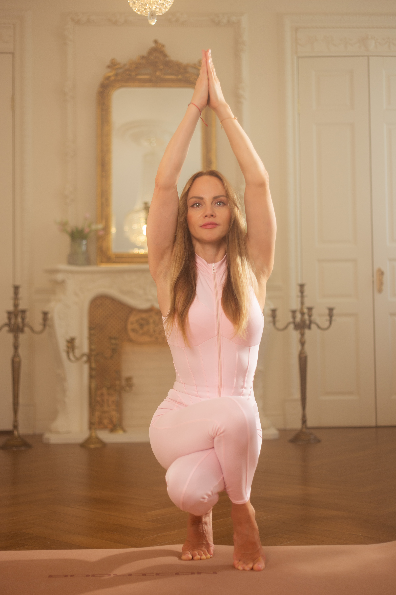
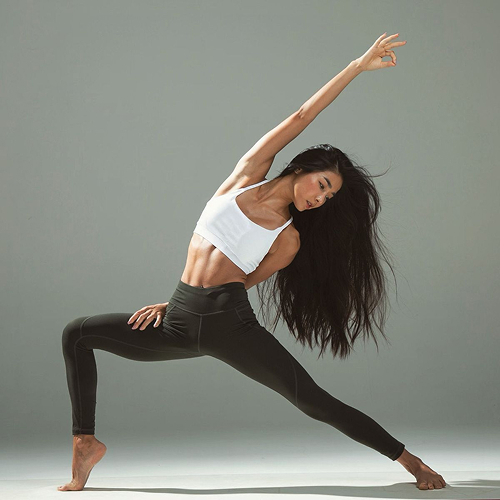
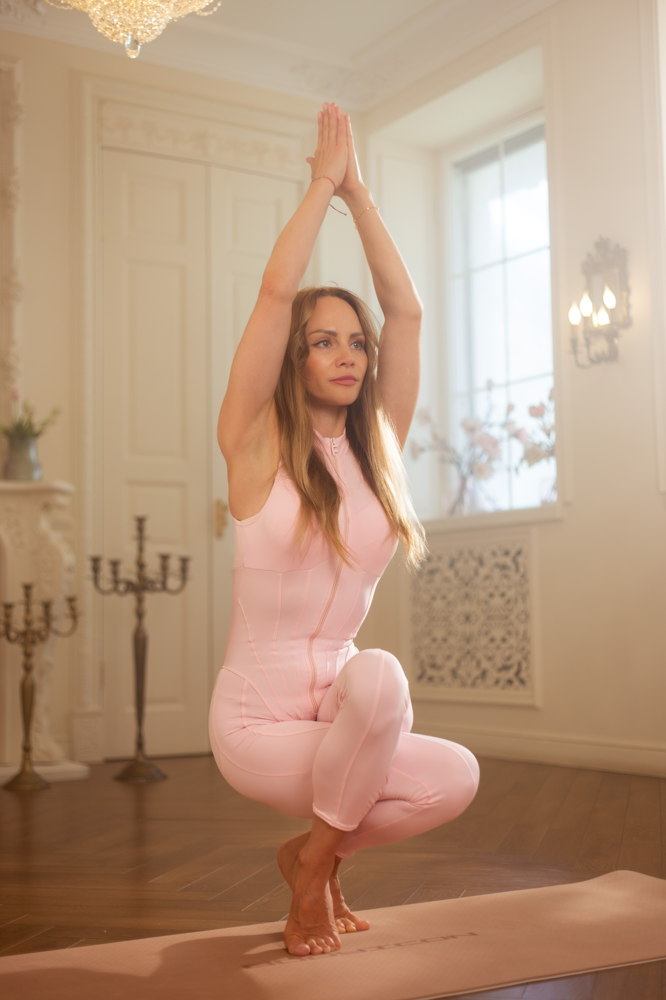
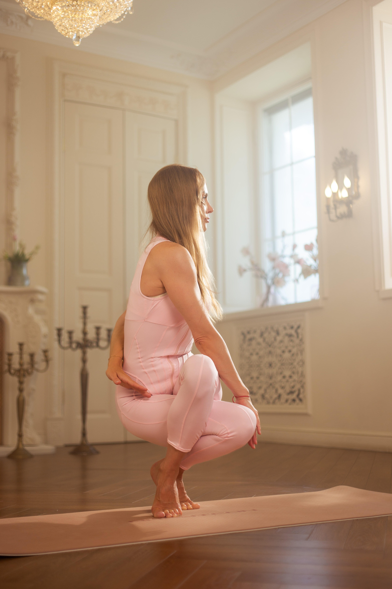

Заметки йога
Размышления о практике, дыхании, философии и всём, что делает йогу образом жизни

ПрактикаКак дышать в асанах: простые техники
Правильное дыхание — основа любой практики. Разбираем, как синхронизировать вдох и выдох с движением, чтобы асаны раскрывались глубже, а ум оставался спокойным. Техники уджайи и полного йоговского дыхания.
Утро без спешки: ритуалы йога
Как начать день, чтобы он сложился? Утренние практики, которые задают правильный ритм: от пробуждения до первой асаны. Рассказываю, из чего состоит моё утро и как внедрить эти привычки в свою жизнь.

ФилософияПочему тело — не главное в йоге
Йога — это не про гибкость и не про красивые асаны. Это про внимательность, принятие и внутреннюю тишину. Делюсь своим взглядом на то, что действительно важно в практике, и почему «получится» не равно «правильно».

ПитаниеАюрведа на каждый день: с чего начать
Аюрведа — не сложная система, а простые принципы, которые можно встроить в обычный день. Как определить свою конституцию, какие продукты подходят разным типам и почему важно есть осознанно. Первые шаги без фанатизма.
Тишина внутри: как начать медитировать
Медитация — это не про «не думать». Это про умение замечать свои мысли и возвращаться в настоящий момент. Простые техники для начинающих, которые помогут найти тишину даже в самом шумном дне. 5 минут — уже результат.

ВдохновениеИстория одной практики: мой путь
Йога вошла в мою жизнь не сразу. От первого неловкого занятия до решения стать преподавателем — честный рассказ о поиске себя, сомнениях, открытиях и том, что помогает не сходить с коврика даже в сложные периоды.
Часто задаваемые вопросы
Всё, что важно знать перед началом
Я стараюсь публиковать новые заметки раз в 1–2 недели. Подписывайтесь на соцсети, чтобы не пропустить — там я анонсирую каждый новый материал.
Конечно! Мне важно, чтобы блог был полезным. Напишите мне в директ или через форму обратной связи — я учту ваши пожелания.
Да, я читаю и отвечаю на все вопросы. Если после статьи осталось что-то непонятным — пишите, я обязательно помогу разобраться.
Да, и для этого не нужно ждать «подходящего момента». Записывайтесь на пробное занятие — я покажу, что йога доступна каждому, независимо от возраста и физической подготовки.
Записаться на занятие
Оставьте контакты — я свяжусь с вами и отвечу на все вопросы
Нажимая кнопку, вы соглашаетесь с обработкой персональных данных